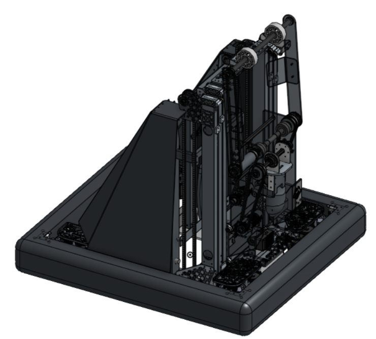
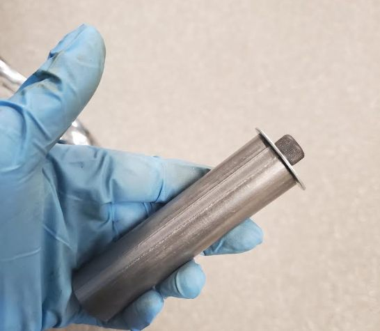
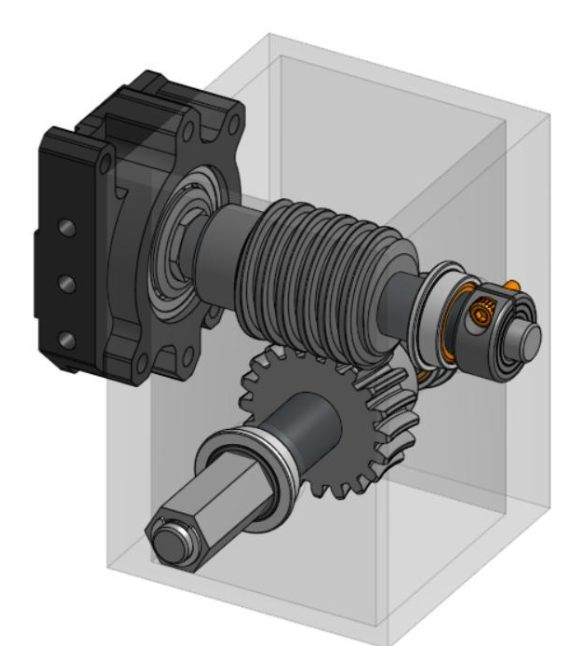
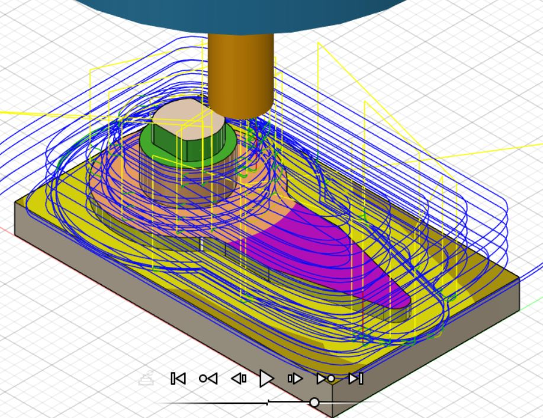

A selection of projects that brought together CAD, machining, testing, and teamwork. The gallery uses all ten project images from my engineering portfolio PDF.

CAD model · design iterationRobot at competition
FIRST Robotics · 2025
Flying Dutchman
Chief Engineer / Lead Designer · MORT 11
Led mechanical design and robot development for the 2025 FIRST Robotics Competition season. The robot combined a multifunctional scoring mechanism, intake, and climbing system, designed to work within a demanding competition schedule.
Developed the robot architecture and mechanical subsystems in CAD.
Created short technical drawings for CNC machining and manual fabrication.
Coordinated subsystem layout, fabrication, and mechanical integration.
Iterated the design with a focus on reliability, structural integrity, and manufacturability.
Mount Olive District: event winner and Alliance 1 captain · Mid-Atlantic District Championship: winner · Qualified for FIRST World Championship.
Robot assembly in CADRobot on the field
FIRST Robotics · 2024
Shadow
Chief of Engineering Design / Lead Designer · MORT 11
Designed and fabricated a compact competition robot within tight frame and packaging limits. The work focused on an intake, controlled scoring system, and dependable operation during matches.
Led mechanical design from concept through CAD and fabrication.
Designed an intake system to collect game pieces and feed the scoring mechanism.
Iterated the robot layout to improve subsystem fit and reliability.
Mount Olive District: ranked 3rd and Alliance 2 captain · Warren Hills: ranked 8th and first pick of Alliance 4 · FRC HAVOC off-season event winner.
Specimen batch ready for materials testing

Finished specimen
Manufacturing · Since October 2025
Jominy test specimens
Student Aide · County College of Morris
Prepared and machined Jominy end-quench specimens for materials science laboratory classes. Consistent geometry and careful finishing helped students carry out repeatable hardness experiments.
Produced 20 specimens for undergraduate laboratory use.
Improved the design from four flat surfaces to two to simplify manufacturing.
Maintained full-length parallel flats and smooth end cuts for reliable measurements.
Operated manual machines and inspected dimensions against specifications.
Hands-on work connecting drawing interpretation, machining setup, and quality checks.

Gearbox assembly in CADMachined prototype
Mechanical design · June–August 2024
Custom FRC drivetrain gearbox
Mechanical design and fabrication
Designed and fabricated a custom worm-drive gearbox for a FIRST Robotics Competition robot. The assembly was developed to provide a compact, functional drive system suited to competition constraints.
Modeled and detailed gears, shafts, bearings, and housing in 3D CAD.
Considered torque requirements, self-locking behavior, and packaging constraints.
Manufactured components with shop equipment and assembled a working prototype.
Evaluated performance through testing and identified improvements for later iterations.
A complete project spanning mechanical design, machining, assembly, and testing.

CNC toolpath planningMachined actuator cover
NASA HUNCH · May–June 2024
Actuator close-out covers
NASA HUNCH manufacturing project
Designed and manufactured internal close-out covers for an actuator as part of NASA HUNCH. The parts were intended for International Space Station hardware and reviewed under NASA guidance.
Created 3D models using Autodesk Inventor and Fusion 360.
Generated CNC toolpaths and G-code in Autodesk Fusion.
Developed an efficient machining workflow while meeting drawing tolerances.
Learned to account for feeds, speeds, and cutting parameters across materials.
Designs were reviewed by NASA engineers and astronauts.